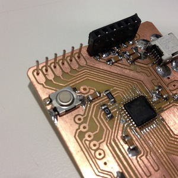
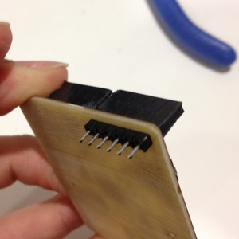
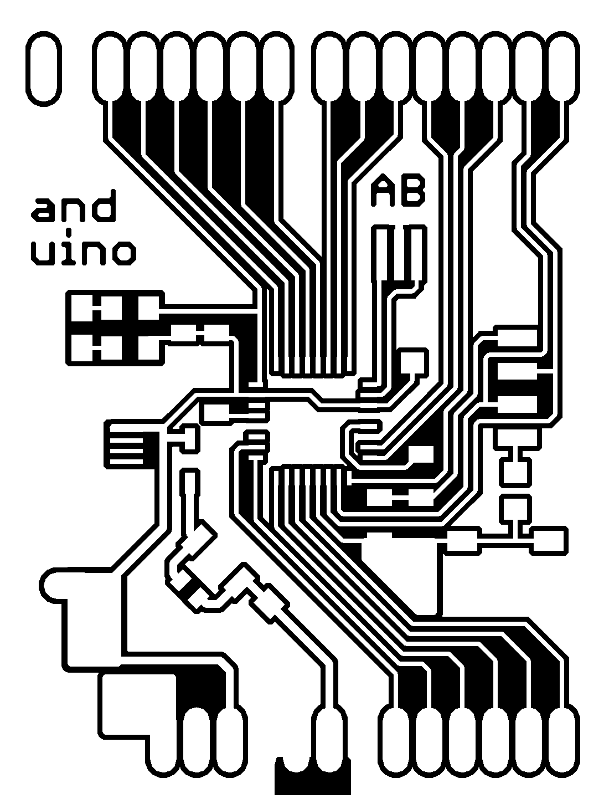
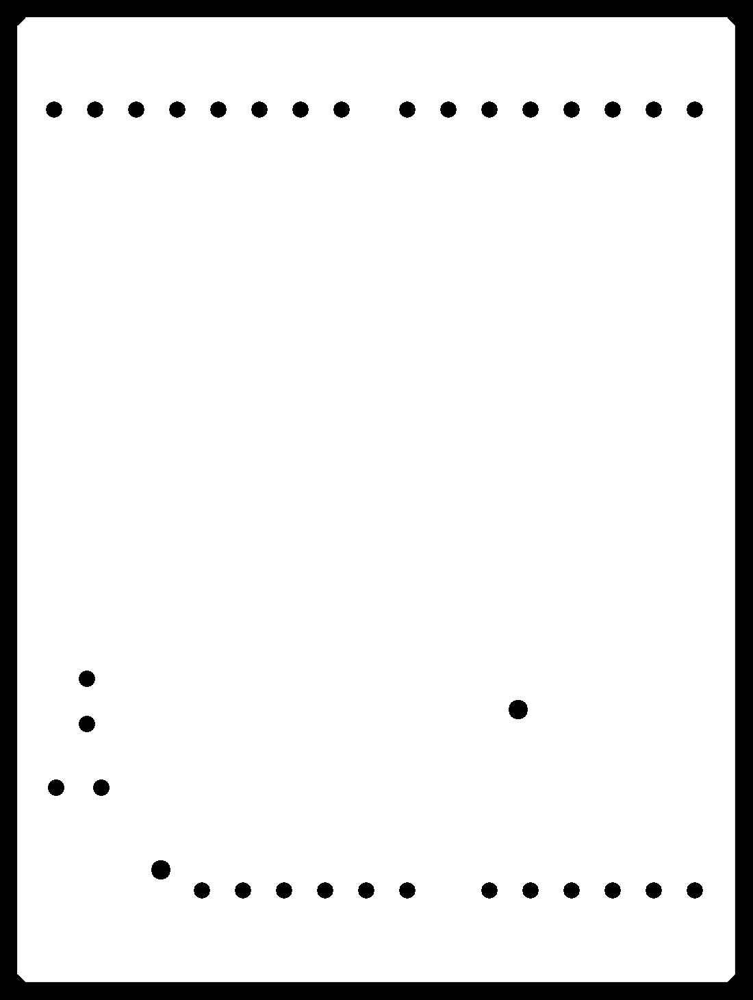

Anduino
Anduino revisions
The Anduino is a pretty streightforward clone of a Sparkfun Arduino Pro Mini and Ed Baafi's Fabkit. Just as Ed did, since there is no 8/16Mhz oscillator in the fab inventory, I used the internal oscillator.
I felt compelled to put together an Arduino clone because I have been developing quite a few shields recently, and needed a clone to prototype with. The Anduino is fully "shield compatible" (except for ARef).
For 5V in there is a two pin 0.1" header and a mini-B USB connector (because I have been powering projects recently with USB chargers). I removed the copper from around the Vin pins so you can graft a right angle header there if needed. On many of my prototypes, I didn't install the 5V regulator, choosing instead to power it with only the USB connector.
Errata
There are some errata, and will reproduce the list of errata here for my notes (and I expect some of the problems to not be resolved)
-
No ICSP headerSee the ICSP shield below - No USB Serial converter - requires use of FTDI cable (I'll probably add a different version with a ATMega16U2 like the UNO)
-
RX and TX swappedFixed - AREF not connected
-
Reset requires jumper wireYea... -
Vin voltage regulator is only 150mA, should probably be 500mAnow has pads for both types of regulators
None of those errata are show stoppers except for RX/TX swapped. This will be fixed in a near future revision. Fixed.
Programming
ICSP Shield
I built an ICSP shield to program the board with the FabISPkey (and to work around the lack of an ICSP header).
To use the Arduino environment with my Anduino, I followed Ed's notes - particularly those for OSX.
First, I placed a board description file boards.txt in ~/Documents/Arduino/hardware/anduino/boards.txt
Then, I selected my board from the list of boards, and used my FabISPkey to program it (select USBTinyISP).
Then, with the RX and TX pins swapped (fixed) connect a FTDI cable, and program normally.
Headers
|  |  |
It's kinda difficult to find headers that you can surface mount like this, I used these and heavily modified them.
Better choices for these headers might be:
They're pass through headers, so I aligned them by putting a header through the holes, then surface mounting the headers as the photos above show.
Doing it Yourself
|  |  |
{kind=link}
{kind=link}
Version 2.1 Anduino.
To play along at home, you can grab a zip made 12/7/11 or check out the most recent version from the repo.
Created by Andy Bardagjy 12/19/2011